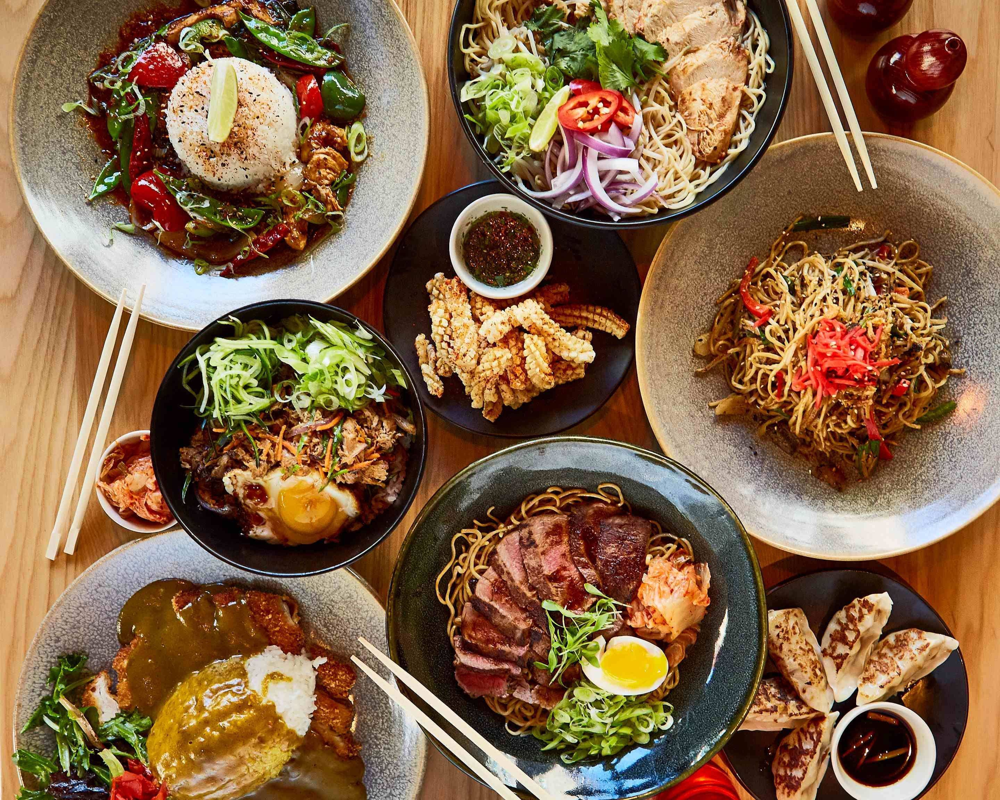
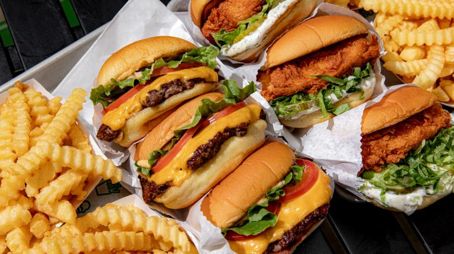
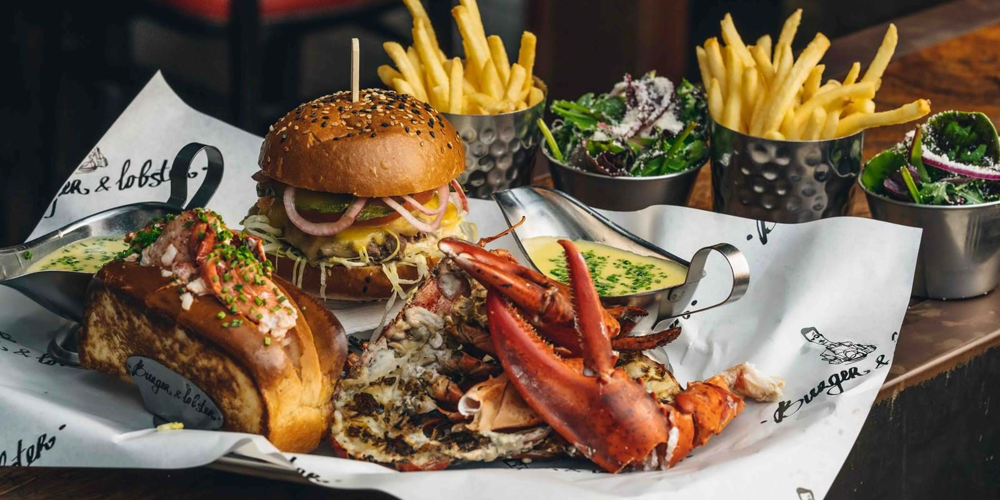
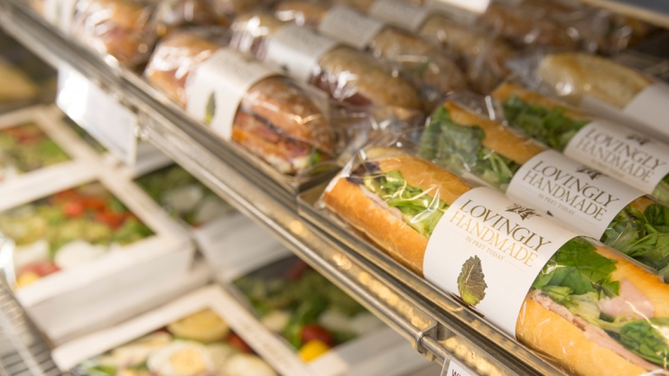

EXPLORE LONDON
GUIDE TO ENJOYING YOUR VISIT ACROSS THE POND
You Know and Love Them: Here are Everyone's Favorite Fast Food Restuarants in London
Grab a quick bite while you're on the go.
Tuesday 26 Novemeber 2024


If quiet little cafes aren't your thing and fine dining isn't necessairly your cup of tea, there are always a number of fast food restaurants throughout London that are bound to suit your taste buds. They provide customers with quick meals that they can fit into their busy schedules, and the meals are budget-friendly which gives them the freedom to enjoy what they like without spending too much money. An addition to that, fast food provides customers with a wide variety of menu items that cater to specific preferences or dietary concerns. That being said, while these menus are large, they always remain consistent, ensuring that customers are provided with the same outstanding taste and quality every single time. Here, we've rounded up some of our favorite chain restaurants.
Wagamama (Covent Garden)
Address: 17 Bedford St, London WC2E 9HP, United Kingdom
Phone Number: +44 20 3876 3727
This popular chain restaurant showcases a blend of British and Asian cuisine. The Japanese-inspired dishes are well known for being extremely flavorful with a menu with things such as a variety in sald, rice dishes, soups, and noodle dishes. Customers of this establishment tend to enjoy popular menu items such as their katsu curry, ramen, and donburi. For those with specific dietary restrictions, Wagamama also has a handful of vegeterian, vegan, and gluten-free options that are just as delicious.
Aside from the food, one of the things that diners love about this specific Wagamama location is its proximity to other areas of entertainment such as shops and theatres. In terms of the restaurant's spacious interior, the modern decor and communal seating give restaurant-goers the chance to experience a rather and casual interactive dining experience.
Shake Shack (Victoria Street)
Address: 172 Victoria St, London SW1E 5LB, United Kingdom
Phone Number: +44 1923 555188
This popular American fast food chain has made its way to London, and is making waves throughout the country with popular food items such as their burgers, crinkle-cut fries, milkshakes, and many more. The Victoria Street branch is situated in the heart of London near Victoria Station, which makes it an extremely convient stop for busy tourists. When diners enter the restaurant, they are greeted with a taste of the establishment's New York roots due to its modern and laid-back interior. All of these things come together in order to create a nice and relaxing social atmosphere throughout the restuarant.
One of the highlight items from the Shack Shake menu would be the ShackBurger, a nice simple burger that includes a beef patty, lettuce, tomato, and their signature ShackSauce. Other popular items include the ShroomBurger, which is a nice vegetarian alternative for those who cannot eat meat. Another signature staple of Shake Shack would be their milkshakes. There are standard flavors such as chocolate, strawberry, and vanilla, but then there are more unique options such as their salted caramel milkshake.
Burger & Lobster (Soho)
Address: 36-38 Dean St, London W1D 4PS, United Kingdom
Phone Number: +44 20 7432 4800
This Burger & Lobster branch is located in Soho, the busiest business district in London. As the name suggests, the restaurant's speciality is bringing two hearty foods, the burger and the lobster, together in order to create extraordinary meals. Although the concept sounds rather simple, the execution of the dishes are far from that of the standard fast food restuarant. Burger & Lobster uses nothing but fresh ingredients in order to elevate the flavors of each menu item. One of the most popular menu items would be the Lobster Roll Burger, which combines a premium lobster tail with a beef patty in a bun.
Another classic menu item would simply be the Whole Lobster, which can be ordered steamed or grilled, that is served with melted butter and fries. In addition to the main stars of the menu, Burger & Lobster offers a variety of side dishes such as onion rings, and includes a wide selection of different cocktails, beers, and wine. Customers constantly praise the Burger & Lobster staff for fostering a friendly and attentive dining experience, which makes it the perfect place do go solo or in large groups.
Pret a Manger (Oxford Street)
Address: 556 Oxford St, London W1C 1LX, United Kingdom
Phone Number: +44 20 7932 5240
Although it does not fall under the conventional definition of fast food, Pret a Manger provides customers with quick, easy, and healthy ready-made food options to take with them while they are on their commute. The menu items are low in preservatives, and they cater to w wide range of dietary restrictions such as vegan, vegeterian, and gluten-free options. Its core food item would be the wide range of sandwhiches and wraps. The ingredients are carefully chosen, and are free of any artificial substances. Popular menu items include the Chicken Caesar & Bacon, Avacado & Spinach, Tuna & Cucumber, and the Smoked Salmon & Avacado Wrap.
In the mood for something warm? Well, Pret a Manger offers a selection of different soups that customers can choose from. Some of those include the Tomato & Basil soup or the Chicken & Vegetable Soup. When it comes to beverages, customers can choose from an assortment of teas, coffees, soft drinks, and smoothies. To make sure that they cater to the different taste buds of all, customers can choose from a range of different types of milk that best fits their preferences. If you do not have time to sit down and eat during your site-seeing, Pret a Manger is the food service for you.